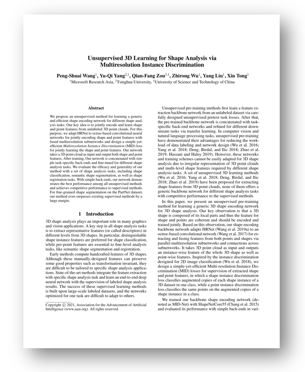

We propose an unsupervised method for learning a generic and efficient shape encoding network for different shape analysis tasks. Our key idea is to jointly encode and learn shape and point features from unlabeled 3D point clouds. For this purpose, we adapt HRNet to octree-based convolutional neural networks for jointly encoding shape and point features with fused multiresolution subnetworks and design a simple-yet-efficient Multiresolution Instance Discrimination (MID) loss for jointly learning the shape and point features. Our network takes a 3D point cloud as input and output both shape and point features. After training, Our network is concatenated with simple task-specific back-ends and fine-tuned for different shape analysis tasks. We evaluate the efficacy and generality of our method with a set of shape analysis tasks, including shape classification, semantic shape segmentation, as well as shape registration tasks. With simple back-ends, our network demonstrates the best performance among all unsupervised methods and achieves competitive performance to supervised methods. For fine-grained shape segmentation on the PartNet dataset, our method even surpasses existing supervised methods by a large margin.
|

|
Paper [PDF]
Slides [PPTX]
Code [Github]
Citation [BibTeX]
Peng-Shuai Wang, Yu-Qi Yang, Qian-Fang Zou, Zhirong Wu, Yang Liu, and Xin Tong. 2020. Unsupervised 3D Learning for Shape Analysis via Multiresolution Instance Discrimination Analysis. In AAAI Conference on Artificial Intelligence (AAAI).
|